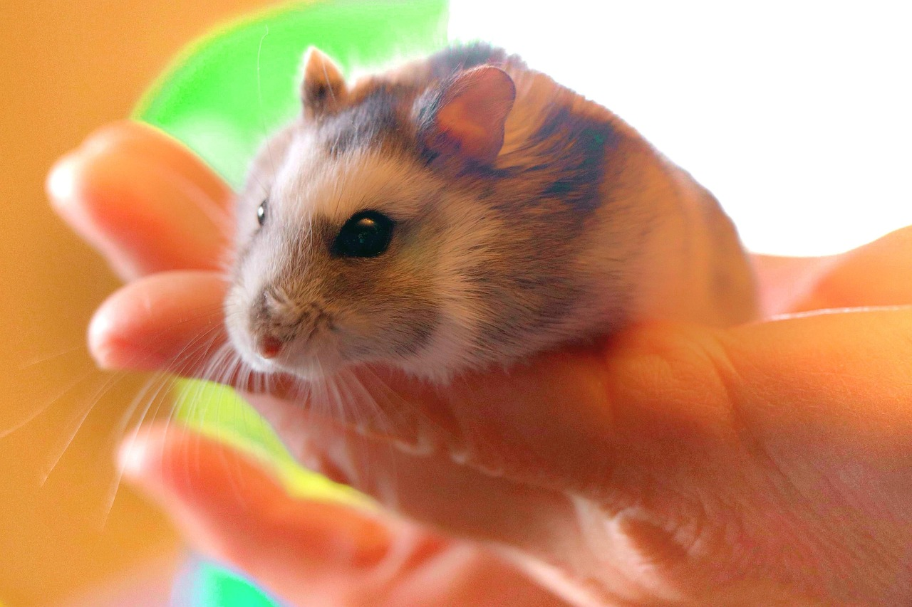

※「単語を見るのもイヤ！」とお嘆きの同志のため、ここからは例の害虫をコードネーム「彼ら」又は「害虫」などと呼ばせていただきます。
家族によっての対応
熱くなって彼らが活発に動く前に対策しよう！！
まず対策として子供・ペットがいる生活とそうでない場合と方法は変わります。
彼らが来る迄にまず対策しましょう！！
また来てからも対策出来るように情報をまとめました！！
害虫を食べてくれる動物・ペット達
少しでも心の支えになるかもしれません。そんなもっと可愛くて頼もしいペットちゃん達の紹介していこうと思います。
|  リス・ハムスター |
好んで虫を捕食しますけど、放し飼いにすると、小さな隙間に入って出てこなかったり、逃走する危険があります。注意を。 |
|---|---|
スローロリス |
可愛らしい外見とは裏腹に、昆虫食のサル類なので、害虫にとっては天敵です。 しかしスローロリスが絶滅の危機に瀕しており日本でも、原則としてスローロリスの取引は禁止になっています。環境大臣の登録票が交付された場合に限り、購入・販売が許可されています。ただ、値段も高く、飼育方法も複雑です。 |
 ネコ |
十分にえさを与えられている飼い猫が、積極的に害虫を捕食することはありません。しかし追いかけて捕まえたりし遊んでいるうちに、害虫は永眠します。 ただし、献上品のように飼い主に献上してくれる可能性が０ではなくそれに対して驚いたり嫌がると信頼関係にも影響がある為心を少し強く持っている方にはいいかもしれません。 |
アシダカグモ |
アシダカグモは素早い動きで獲物を狩ります。素早く動く害虫もアシダカグモにはかないません。 |
ヤモリ |
ヤモリはよく動く小さな虫が大好物で、昔からシロアリやハエ、害虫を食べてくれる動物としてありがたがられていました。しかし、ヤモリの体長はあまり大きくないため成長した害虫だと捕食できません。 |
トカゲ |
トカゲはハエやアリなどの虫を餌にしています。虫である害虫も、トカゲにとって大好物ともいえるでしょう。トカゲは歯がないため餌を丸のみにします。その消化能力はかなり強力であるといえるでしょう。 |
カエル |
両生類であるカエルもトカゲと同様、幼虫の小さい害虫であればを食べることができます。 |